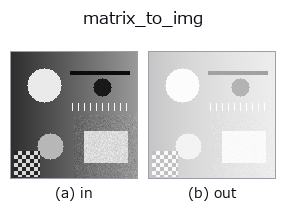

bridge op• 数据种类:matrix → image
• 调用:fullseye.apply(img, "matrix_to_img", a=0.5, b=0.5)(2-D 的模型是一张图 + 两个标量旋钮 a,b∈[0,1])

*图为在 128×128 合成输入上实际运行的输出。左为输入，右为输出。点云以俯视散点显示(亮度 = z)，一维序列为折线，体数据为沿 z 的最大值投影，视频为中间帧，复数图像为幅值；无法成像的返回值直接显示数值。*
扫描旋钮 a(0.1 / 0.5 / 0.9，另一旋钮取默认):
▸ matrix_to_img: knob a sweep (docs site)
扫描旋钮 b(0.1 / 0.5 / 0.9，另一旋钮取默认):
▸ matrix_to_img: knob b sweep (docs site)
阶段(前置算子 → 本算子，从左到右):
▸ matrix_to_img: stages (docs site)
换别的图像(合成场景 / 照片 / 硬币。上排为输入，下排为对应输出。旋钮取默认):
▸ matrix_to_img: other inputs (docs site)
> 该算子的说明尚无译文,以下照原文给出。
行列を見るための濃淡にして画像へ戻す —— キャストではない。
行き(`img_to_matrix`)は値も形も変えない純粋なキャストだと明記して
あるが、戻りを同じくキャストにすると嘘になる: 行列の値は [0,1] に収まらず、
最小値が黒・最大値が白に伸びるだけだと 0 がどこかが分からない。
共分散・相関・擬似逆行列の符号は、そこが読めないと意味を持たない。
• `a → **対数圧縮**の強さ。k = 10**(3a) - 1` として
`y = sign(x) * log1p(k|x|) / log1p(k)`(a=0 は線形、a=1 で 1000 倍の圧縮)。
条件数のように桁が開く行列で、小さい成分が全部黒に潰れるのを防ぐ。
• `b → 基準。b < 0.5` はデータの min–max を [0,1] に伸ばす、
`b >= 0.5 は **0 を 0.5 に置いて |x|` の最大で対称に**(符号つきの
行列向け。0.5 が中立、明るい = 正、暗い = 負)。
• 返り値: 入力と同じ形の float64、値域 [0,1]。全要素が等しい行列は一様な
0.5(min–max 側でも 0 除算にならないよう中立へ倒す)。
• 示例数据目录(下载 URL / 许可证) —— 2-D 用 skimage.data(BSD/公有领域)加合成图,3-D 给出真实数据源(Stanford/PDS 等)的下载 URL。
• 算子来历与参考文献 —— 该算子族所依据的研究/方法出处。
• 算法的正典(作者・年份)与用途见上面的族使用指南。
下面的程序已确认可以运行(与图相同的输入)。在 Studio 帮助中，此块会变成按钮，可当场加载并运行。
img_to_matrix 0.50 0.50 matrix_to_img 0.50 0.50
▸ Load this pipeline · Load & run
• gallery2d_bridge — py -3.11 examples/gallery2d_bridge.py
image 作为输入)identity · gaussian · mean_box · bilateral · unsharp · median · min_filter · max_filter
bridge)img_to_points · img_to_keypoints · img_to_signal · img_to_projection_profile · img_to_counts · img_to_matrix · img_to_video · img_to_volume
*Provenance: ops.py — 2D 算子登记表。本条目由 tools/opdocs.py md 自动生成(请勿手工编辑)。*
© 2026 Kazufumi Furuse — Fullseye operator documentation. Licensed under Apache-2.0.
{kind=link}
{kind=link}
{kind=link}
{kind=link}